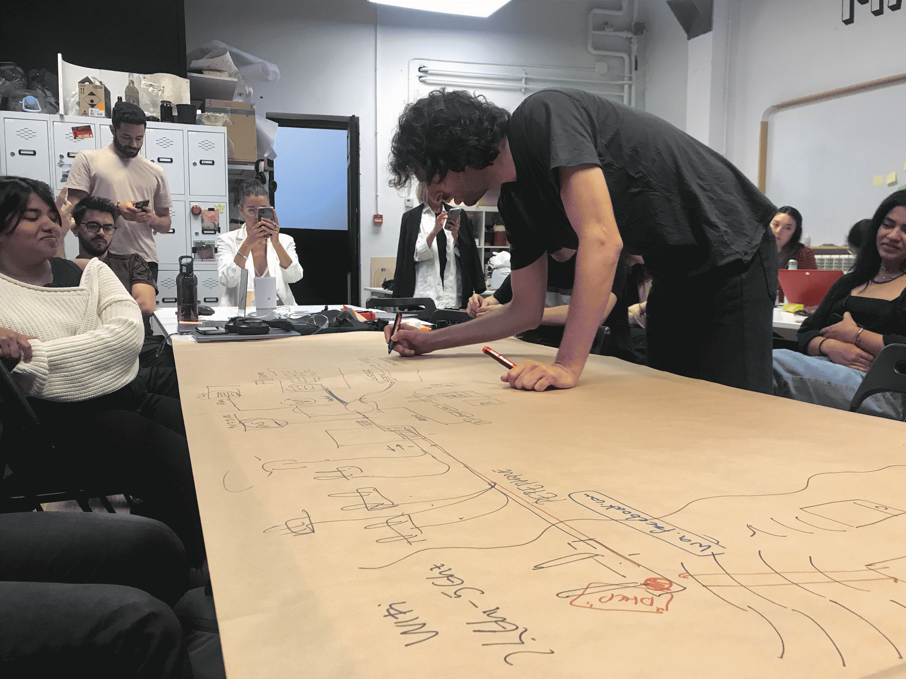
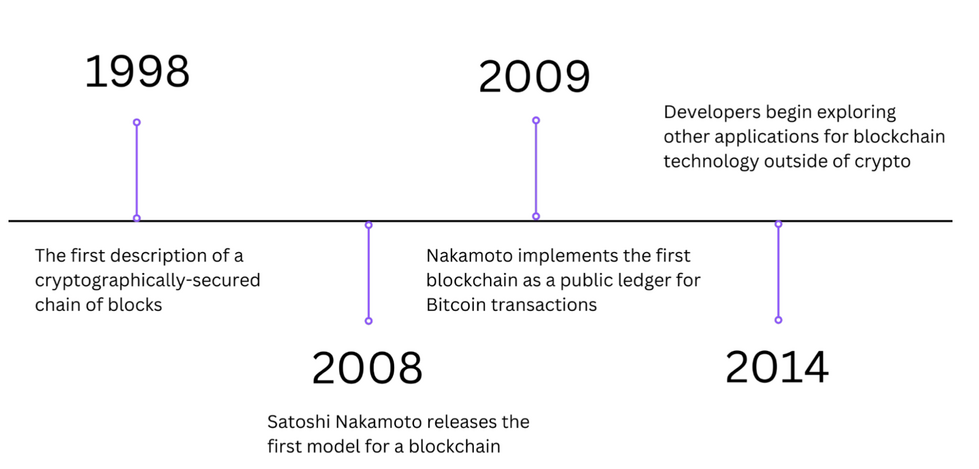
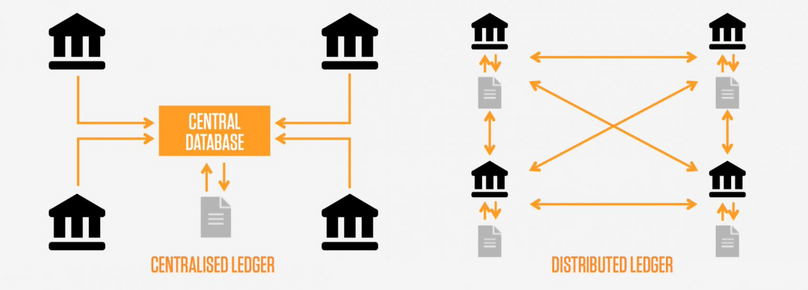
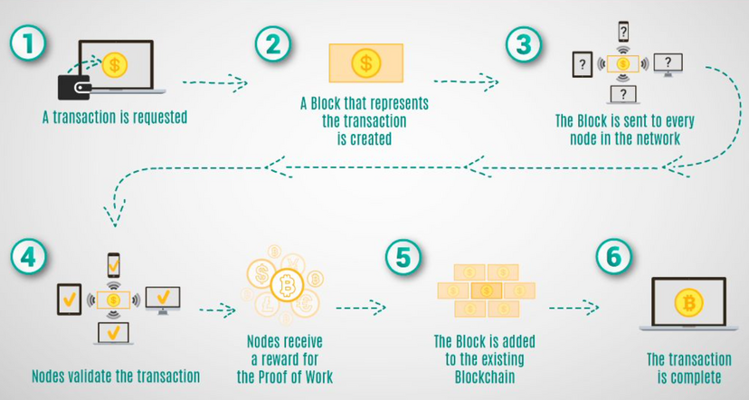
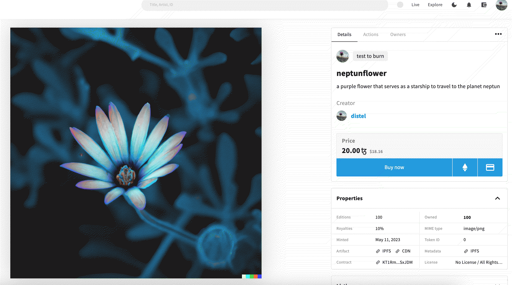

¶
üóì Week 26 - / 4 mai - 2023
blackboxings, the web 3.0 and DAOs¶
with Guillem Campodron ansd Mar Canet Solà
we are examining how emerging technologies hide the internal working tp simplify user-access but how (when uncovered and comprehended) empower individuals and groups. Is there a link to a more coherent society? we are looking at blockchain, cryptography, and decentralized autonomous organizations (DAOs). what are the social and ethical implications of emerging technologies such as Ethereum and Bitcoin, as well as the emergence of NFTs, nowadays? how did the mail (post) system (back then high-tech invention!) in our history influenced societies? is something similar in happening with the invention of DAOs and other systems that structure power? The course-guide is on this gihub-page.
what is technology? cultural artefacts and collective intelligence
4 may an introduction with Guillem Campodron
5G changes everything. But what is 5G? a 5.000 pages document about the ways of communication in the next generations. What is the internet? just a network of cables at the bottom of the ocean and a lot of harddrives all around in strage centers. Decentralized? not really.
how much time, energy, effort does it need to acually understand what is behind the technologies we use? We went from technology to abstract to black boxes. The user has no idea anymore.
we are using technologies now for all our interventions, whether they are digital or more manual, we are taking a decision every time even if we do not realize. websites, interfaces, drives, documents…BUT we cannot forget: “technolgies are cultural artefact”. We have to understand the culture of any sufficiently advanced technology.
HOW SO?
we need to move from extractive to regenerative technologies
e.g. monocultural agriculture vs. permaculture principles. Both are advanced technologies, both are planning and predicting. But one is extractive, whereas the other is regenerative.
we need to move from convenience to expressive technologies
e.g. trying to avoid using preset formulas for how things ought to be, looks, are supposed to use and impact…
from survival to rebel technology
e.g. technologies that fully questioning the status quo rather than using altenative paltforms, technologies that are not owned by big companies. Be consicous about what you are doing and what is about to come.
Decentralised Autonomous Organisations (a DAO)¶
from a network to web 2.0 to web 3.0 (aka the invention of DAOs)
promises and pitfalls of the web:
in the beginning, we thought the internet, the web would be different from traditional econnomies but rather a open-source, collaborative project. PROMISES we believed in. but, how does this collective intelligences nowadaways are in making? e.g. wikipedia = knowledge is a promise of collecive knowledge creation, of a collecive intelligence? If taking about the web and collective intelligences, we have to talk about the platforms and companies that arer enabelling these technologies.
the project that the internet is build on: Request for Commons, 1918 = RFC 1918 - a document that define certain standards for a protocols.
what is the web 3?¶
the Web 3.0, (third generation of the internet) is a new iteration of the internet that aims to decentralize the web and empower individuals - giving them more control over their data, digital identities, and online interactions. Closely linked to concepts as blockchain and token-based economies.
Ethereum co-founder Gavin Wood coined the term in 2014. A web3 foundation was founded by by Dr. Jutta Steiner and Reto Trinkler, which is a non-profit organization that supports the development and advancement of Web3 technologies and projects.
history
web 1.0 = here websites were static and infrmation mainly for consumption - very little contribution to the data by users.
web 2.0 = websites became dynamic and interactive: social media platforms, user-generated content, collaborative experiences.
web 3.0 = when web 2.0 relies in content and data on big tech, power is centralized in a few smalll group ccompanies, the goal of web 3.0 is to eliminate this power centralisation and work with many decentral user-contents: peer-to-peer networks in which data is stored and validated by a distributed network of nodes. furthermore web 3.0 foccusses on data-ownership, control and access. e.g. cryptocurrencies and digital identities that allow peer-to-peer transactions.
what is a DAO?¶
Decentalised Autonomous Organisations are organization that operates on a blockchain network without a central authority or hierarchical structure. It is governed by smart contracts and automated rules encoded in computer code.
here, decision-making and operations are carried out collectively by its members, who hold tokens representing their ownership or participation rights. These tokens give members voting power to determine the direction of the organization, make decisions, and allocate resources.
DAOs provide a secure and transparent way for participants to collaborate, coordinate, and contribute to a shared goal, without the need for intermediaries or central authorities - a democratic framework.
With Guillem we are talking about privacy by policy and go through the process of our digital live…

unfolding blockchain and creating NFTs¶
10 may with Mar Canet Solà
Mar Canet Solà is dealing with artificial intelligences and blockchain interventios. He talks with us about the concept of distributed autonomous organizations. One of his project uses AI to make ceramic pods: Psychedelic Forms. This project is from him and his team-partner varvara&mar.
history if blockchain and crypto currencies¶

in 2007 Satoshi Nakamoto started writing a code that later no became knows as BitCoin. This person, or groups of people (is is not known excactly who satoshi nakamoto are = pseudonymous creator(s) of bitcoin) implemented the first blockchain.
In 2008, Nakamoto published a whitepaper (technical document that presents a specific problem, proposed solution, and detailed technical information about a particular project, product, or technology) titled “Bitcoin: A Peer-to-Peer Electronic Cash System,” outlining the concept of a decentralized digital currency.
what excactly is blockchain?¶
“An incorruptible, distributed database that maintains a continuously growing list of records, called blocks. Bitcoin was the first application of a blockchain.”
a decentralized technology that serves as a public document to record and verify transactions. It operates through a network of computers, or nodes, which collectively maintain the blockchain. Each action is governed by a distributed network of computers called nodes. Blockchain is a public data base that has a system of security and a system of communication. eveything remains anonymous. each blockchain has different software infrastructures. Like other softwares, they can be updated. (e.g. ethereum updated their environmenal impact and managed to reduce their polution about 99%).
how does is work? from centralized too distributed.

ledger = a book or collection of accounts in which account transactions are recorded
fun fact: Estonia’s government has their own blockchain system to safe official and (il)legal-related data.
what excactly is cryptocurrency?¶
it is a digital or virtual form of currency that uses cryptography (constructing and analyzing protocols that prevent third parties or the public from participating in peer-to-peer interactions) for secure transactions and operates independently of any central authority (e.g. banks…). They are non physical; exist only in digital form and are stored in digital wallets. Cryptocurrencies use blockchain to control the creation of new units and secure the transfer of funds; meaning that transactions enter a Blockchain system instead of going via a tranditional banking systems.

what excactly are non fundgible tokes (NFTs)?¶
there are fungible tokens, semi-fungible tokens, and non-fungible tokens.
In general, tokens are the digital representations of assets (Assets are all media that you store in electronic format: any form of content or value that exists in digitally) within blockchain networks. Tokens can serve various purposes, such as access to services, participation in decentralized applications, or ownership of specific assets. the differences:
fungible = each token holds the same value and can be mutually exchanged. For example, cryptocurrencies like Bitcoin or Ethereum are fungible tokens. If you have one Bitcoin and exchange it for another, you still possess the same value.
semi-fungible = each token may have different attributes or properties, making them unique within a certain set but they do have certain commonalities.
non-fungible = unique and indivisible digital assets. Each NFT has distinct properties, making it different from any other token. They can represent ownership of a specific item, artwork, collectible, or even virtual real estate.
what are wallets?
it is where you store your assets (e.g. cryptocurrencies or tokens)
why crypto currency?
we are in priviledged environments in which we have (semi)stable coins. e.g. dollars and euros. This is not everywhere in the world like that. How is money created? by printing paper and by building dept. It is a system based on trust that not everyone at the same time goes to take their money from tha bank. THUS a very unstable and insecure system! crypto currencies are a complete new format of value exchange in which there are no intermediaries like banks or companies.
creating NFTs¶
11 may with Mar Canet Solà
we are creating a temple wallet in order to create NFTs based on the crypto currency Tezos (at one point during this class. At least, this remains my motivation for downloading all these different extensions and creating accounts and passwords and saving security sentences and uploading logo-images).
IPFS: a free file server! like google drive and icloud. A digital space on the internet where you can serve and save files and access them from everywhere.
We make an account on IPFS in order to have a icon on out bezos profile… because we do not want to have the default cat icon!!!!
so we have made a Tezos profile and are entering a Tezos related market place.
sooo going to the NFTs… The first once that made NFT big were the Crypto citties. Is there a link to the default cat that we are so badly trying o avoid???
one of the largest NFT market places is openseas in which we can track every sell and buying of NFT art. Like for example Kyle McDonalds works, or Maurice Benayoun.
NFT and art
As we know by now, NFTs are non-fungible tokes. Artists can create NFTs to represent their digital artwork, which can include images, 3D models, music, or even code. These NFTs serve as a unique digital certificate of ownership and authenticity for the artwork.
The process typically involves uploading the digital artwork to a platform or marketplace that supports NFTs. The artwork becomes a (code)block in a blockchain that is defined by a smartcontract in which characteristics, ownership rights, ect are defines. These code blocks are often governed within DAOs, where its members collectively decide on the governance and distribution of NFTs.
One example is uploading a code that can be edited. So for example on fxhash (which is the market based on the currency Tezos), an artist has made a code accessible to be adapted 200 times. The user can download the code (if within the 200 first users), edit some variables and mint it!. Minted means that it cannot be changed anymore, it has become a non-fungible token that can be sold now.
the NFT market has been a very good thing for artist as it has allowed a lot of atist to keep on making and producing art and living from their practice. NFTs are not only online. There is a lot of physical presence of NFTs inn 2021 there was the first gallery exhibition with physical NFTs.
We will work on objkt to create our first NFT… first, I sync my temple wallet to the objkt market place. I am signing everything I have to sign to connect my firefox extension and here we are. I am creating a collection which I call “test to burn” because there is a function to burn later on what I did on objkt if I do not like things. And now I am ready to create my first Token. So lets play… with dall-e I am creating a starting imgage. This is what will become my NFT. The promt for my image: a purple flower that serves as a starship to travel to the planet neptun. This resulting image I download and upload into my objkt wallet.

YES made it. I have created my first NFT. I am a bit disillusionated. In the end it is just a picture. Within a few minutes I wrote a prompt for DALL-E who created and image which I am selling now for 20 tezos a piece (and there are five hehe). But I can do this with code as well…
12 may with Mar Canet Solà and Marielle
DAO s use blockchain to facilitate self-enforcing rules or protocols. They are completely transparent about the flow and the existence of tokens in their community. Some artists are hacking the DAO system and use them to create artistic practices e.g. botto by Mario Klingerman who runs an art space in madrid. He runs a system that is creating 300 more images every month and some of the images arrive to the DAO members that vote and only a few choosen once go to the auction every month. In order to enter the auction you have to be a DAO member. Another interesting DAO Jonas Lund DAO. An artist who hacked the system of DAOs more fully. It is an art project in which he lets the members of his DAO decide (via the many votings and referendums) when and where he should go onto vacations.
Akasha hub in Barcelona (whom we we are collaborating with for the MDEF-fest) is the first physical implementation of a DAO. They are part of the swiss based Akaha foundation. They have a very cool abc about related terms.
other interesting points for thought:
latent spaces: things that you cannot get direct measures of but it is there and it has influence. You have to go somehow around it to measure its impact. @Mar’s phd topic!
Generative Adversarial Networks (GANs) a class of machine learning models that are used to generate new and realistic data, such as images, videos, or audio, based on training data they have been exposed to = thus creating fakes or the realities. They are training a generator network to create artificial data based on the learned, fed data. Now there is an updates approach to synthesising (faking) data: diffusion models like stable diffusion. This technique uses a step-by-step process to transform an initial distribution into the desired data distribution. But, GANs are no dead. Diffusion models are slow whereas GANs are fast.
excercise using the web 3.0 with Marielle and the MOC
our hackmd.
and my proposal.
interesting references:¶
• Jana virgin
• Shape-E article
• Shape-E github
• huggin face
• git hub co-pilot - helps you proggramming
‚Ä¢ software programming with”processing” it it processing for javascript (pfjs)
Books:
Papers:
• Bitcoin: A Peer-to-Peer Electronic Cash System. 2008.Satoshi Nakamoto
• Botto: A Decentralized Autonomous Artist 2022
Articles:
•Are Your NFTs Safe? How to Protect Digital Assets From Disaster
• LACMA Has Acquired a Who’s Who of Blockchain Art by Important Generative Artists